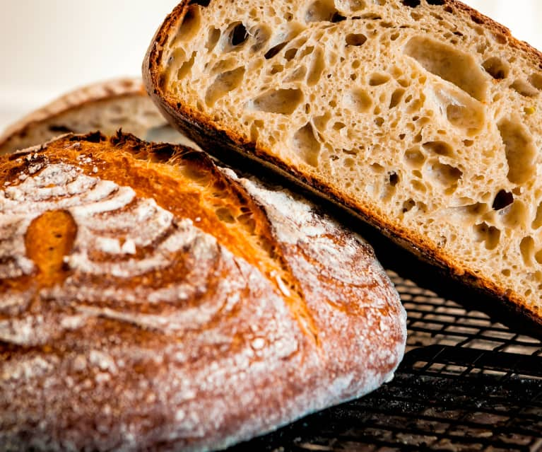

Sourdough Bread

Recipe for a good loaf of sourdough bread
Have you always wanted to bake the perfect loaf of sourdough bread. Well, look no further.
This recipe will show you how easy it is to achieve, provided you already have a good, ready-to-use starter.
INGREDIENTS (for one loaf):
- Bread flour : 400g
- Lukewarm water: 260ml
- Starter: 100g
- Salt: 10g
Directions:
- Add the water to a bowl and mix with the salt (with a hand).
- Add the starter and mix well.
- Add the flour and mix with a spoon until it forms a ball.
- Cover and leave to rest for an hour.
- After one hour, mix again with a wet hand and form a ball.
- Leave to rest for 5 more hours.
- Put your dough in the fridge overnight.
- The next day, preheat your dish at 250°C for 1/2 hour.
- While the oven is preheating, form a ball with your dough (using flour to avoid it sticking to your hands) and put it in a bread basket.
- After 1/2 hour, put the dough in the hot dish, score it however you want, and put the cover on the dish.
- Bake for 40 minutes and wait at least 1 hour before cutting your fresh bread once it is out of the oven.
Back home